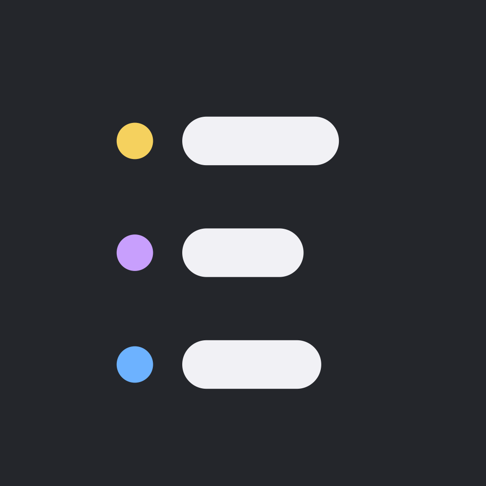

Unofficial Linear Widgets
A native, read-only Linear companion for iPhone, iPad, and Mac.
Keep your issues in view
Create saved views by project, optionally scope them to a team, select workflow states, and filter for issues assigned to you. Browse issues and display saved views in Home Screen or Mac desktop widgets.
Direct connections, local storage
Use your own Linear personal API key. The key stays in Keychain, and requests go directly to Linear. Saved views and cached issues stay on your device. Nothing is synced through iCloud or between devices.
Explore without an account
Try the built-in demo with fictitious data. Choose light, dark, or system appearance. Widgets update periodically or on demand, rather than in real time.
Requires iOS 17 or later or macOS 14 or later. This app is unofficial and is not affiliated with or endorsed by Linear.